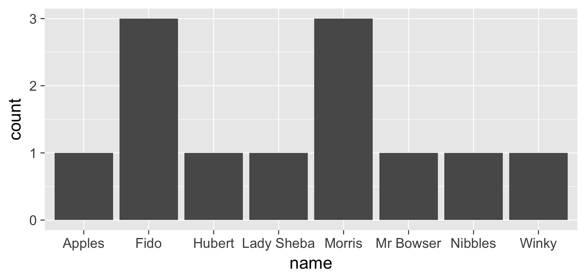

Working with Factors/Categorical Data
In this section, we’ll learn some skills about manipulating factor (categorical) data.
We’ll do this by making a bar plot and a box plot and progressively making it more complex.
Reviewing Factors
Factors are how R represents categorical data.
There are two kinds of factors:
factor - used for nominal data (“Ducks”,“Cats”,“Dogs”)ordered- used for ordinal data (“10-30”,“31-40”,“41-60”)
We’ll manipulate our barplot and add more information using factors.
Here’s the simple dataset we’ll use to investigate how to work with factors in ggplot.
For the factor and ordered variables, find the categories for each using levels().
library(tidyverse)
load("data/pets.rda")
pets
A Basic Barplot using geom_bar()
The geom_bar() default is to count the number of values with each factor level. Note that you don’t map to a y-aesthetic here, because the y values are the counts.
Given this dataset, we might want to ask how many pets have the same name. What is the most popular name?
Try mapping another variable to fill (try both weight and animal). Are the results what you expected?
ggplot(data = pets, mapping = aes(x=name)) + geom_bar()

Faceting
Say you have another factor variable and you want to stratify the plots based on that. You can do that by supplying the name of that variable as a facet. Here, we facet our barplot by shotsCurrent.
ggplot(data = pets, mapping = aes(x = name)) + geom_bar() +
## have to specify facets using notation
## try out facets=~ageCategory!
facet_wrap(facets = ~shotsCurrent) +
## we make the x axis x angled for better legibility
theme(axis.text.x = element_text(angle = 45))
You might notice that there are blank spots for the categories in each facet. We can restrict the factors in each by using scale="free_x" argument in facet_wrap().
How many animals named “Morris” did not receive shots?
What happens when you replace the scale argument with “free_y”?
ggplot(pets, aes(x = name)) + geom_bar() +
facet_wrap(facets = ~shotsCurrent, scale = "free_x") +
theme(axis.text.x = element_text(angle = 45))
Stacked Bars
Let’s see how many of each animal got shots. We can do this by mapping shotsCurrent to fill.
#we map color (the outline of the plot) to black to make it look prettier
ggplot(pets, aes(x = animal, fill = shotsCurrent)) +
geom_bar(color = "black")
Proportional Barchart
We may only be interested in the relative proportions between the different categories. Visualizing this is useful for various 2 x 2 tests on proportions.
What percent of dogs did not receive shots?
ggplot(pets, aes(x = animal, fill = shotsCurrent)) +
geom_bar(position = "fill", color = "black")
Dodge those bars!
Instead of stacking, we can also dodge the bars (move the bars so they’re beside each other).
ggplot(pets, aes(x = animal, fill = shotsCurrent)) +
geom_bar(position = "dodge", color = "black")
Your Task: Bar Charts
Given the pets data.frame, plot a stacked proportional barchart that shows the age category counts by animal type. Is the proportion of animals receiving shots the same across each age category?
Hints: think about what to map to x, and what to map to fill.
eyJsYW5ndWFnZSI6InIiLCJwcmVfZXhlcmNpc2VfY29kZSI6InBldHMgPC0gZGF0YS5mcmFtZShpZCA9IGMoJ0MxJywnQzInLCdEMScsJ0Q0JywnRDgnLCAnQzQnLCAnRDUnLCBcbiAgICAgICAgICAgICAgICAgICAgICAgICdDMTAnLCBcIkc0XCIsIFwiQzExXCIsIFwiRDlcIiwgXCJDNlwiKSxcbiAgICAgICAgICAgICAgICAgICBuYW1lID0gZmFjdG9yKGMoXCJNb3JyaXNcIiwgXCJNb3JyaXNcIiwgXCJGaWRvXCIsIFwiTXIgQm93c2VyXCIsIFxuICAgICAgICAgICAgICAgICAgICAgICAgICAgICAgICAgXCJGaWRvXCIsIFwiTGFkeSBTaGViYVwiLCBcIkh1YmVydFwiLCBcIkFwcGxlc1wiLCBcIk5pYmJsZXNcIixcbiAgICAgICAgICAgICAgICAgICAgICAgICAgICAgICAgIFwiTW9ycmlzXCIsIFwiV2lua3lcIiwgXCJGaWRvXCIpKSxcbiAgICAgICAgICAgICAgICAgICAjI3dlaWdodCBpcyBpbiBwb3VuZHNcbiAgICAgICAgICAgICAgICAgICB3ZWlnaHQgPSBjKDYsIDcsIDE1LCAyMCwgNDAsIDEwLCA2MCwgMTcsIDAuMiwgMTAsIDExLCA2KSxcbiAgICAgICAgICAgICAgICAgICBhbmltYWwgPSBmYWN0b3IoYyhcImNhdFwiLCBcImNhdFwiLCBcImRvZ1wiLCBcImRvZ1wiLCBcImRvZ1wiLCBcbiAgICAgICAgICAgICAgICAgICAgICAgICAgICAgICAgICAgXCJjYXRcIiwgXCJkb2dcIiwgXCJjYXRcIiwgXCJnZXJiaWxcIiwgXCJjYXRcIiwgXCJkb2dcIiwgXCJjYXRcIikpLFxuICAgICAgICAgICAgICAgICAgICMjYmVjYXVzZSBpdCdzIGFuIG9yZGVyZWQgY2F0ZWdvcnksIHdlIGhhdmUgdG8gc3BlY2lmeSBcbiAgICAgICAgICAgICAgICAgICAjI29yZGVyIGFzIHRoZSBsZXZlbHMgYXJndW1lbnRcbiAgICAgICAgICAgICAgICAgICBhZ2VDYXRlZ29yeSA9IG9yZGVyZWQoYyhcIjAtMlwiLCBcIjUtOFwiLCBcIjUtOFwiLCBcIjMtNFwiLCBcIjMtNFwiLCBcbiAgICAgICAgICAgICAgICAgICAgICAgICAgICAgICAgICAgICAgICAgIFwiNS04XCIsIFwiMC0yXCIsIFwiNS04XCIsIFwiMC0yXCIsXCI1LThcIiwgXCIzLTRcIiwgXCI1LThcIiksIFxuICAgICAgICAgICAgICAgICAgICAgICAgICAgICAgICAgICAgICAgIGxldmVscyA9IGMoXCIwLTJcIiwgXCIzLTRcIiwgXCI1LThcIikpLFxuICAgICAgICAgICAgICAgICAgIHNob3RzQ3VycmVudCA9IGMoXCJOb1wiLCBcIlllc1wiLCBcIk5vXCIsIFwiTm9cIiwgXCJZZXNcIiwgXCJOb1wiLCBcbiAgICAgICAgICAgICAgICAgICAgICAgICAgICAgICAgICBcIk5vXCIsIFwiWWVzXCIsIE5BLCBcIk5vXCIsIFwiTm9cIiwgXCJZZXNcIikpIiwic2FtcGxlIjoibGlicmFyeShnZ3Bsb3QyKVxuXG4jU3BhY2UgZm9yIHlvdXIgYW5zd2VyIGhlcmUuIiwic29sdXRpb24iOiJsaWJyYXJ5KGdncGxvdDIpXG5nZ3Bsb3QoZGF0YSA9IHBldHMsIFxuICAgICAgIG1hcHBpbmcgPSBhZXMoeCA9IGFnZUNhdGVnb3J5LCBmaWxsID0gYW5pbWFsKSkgK1xuICBnZW9tX2Jhcihwb3NpdGlvbiA9IFwiZmlsbFwiKSIsInNjdCI6InRlc3RfbGlicmFyeV9mdW5jdGlvbihcImdncGxvdDJcIilcbnRlc3RfZ2dwbG90KGNoZWNrX2RhdGEgPSBUUlVFLCBjaGVja19hZXMgPSBUUlVFLCBjaGVja19nZW9tID0gVFJVRSlcbnN1Y2Nlc3NfbXNnKFwiTmljZSFcIilcbnRlc3RfZXJyb3IoKSJ9
Intermediate Folks: facet this plot by shotsCurrent using facet_wrap.
eyJsYW5ndWFnZSI6InIiLCJwcmVfZXhlcmNpc2VfY29kZSI6InBldHMgPC0gZGF0YS5mcmFtZShpZCA9IGMoJ0MxJywnQzInLCdEMScsJ0Q0JywnRDgnLCAnQzQnLCAnRDUnLCBcbiAgICAgICAgICAgICAgICAgICAgICAgICdDMTAnLCBcIkc0XCIsIFwiQzExXCIsIFwiRDlcIiwgXCJDNlwiKSxcbiAgICAgICAgICAgICAgICAgICBuYW1lID0gZmFjdG9yKGMoXCJNb3JyaXNcIiwgXCJNb3JyaXNcIiwgXCJGaWRvXCIsIFwiTXIgQm93c2VyXCIsIFxuICAgICAgICAgICAgICAgICAgICAgICAgICAgICAgICAgXCJGaWRvXCIsIFwiTGFkeSBTaGViYVwiLCBcIkh1YmVydFwiLCBcIkFwcGxlc1wiLCBcIk5pYmJsZXNcIixcbiAgICAgICAgICAgICAgICAgICAgICAgICAgICAgICAgIFwiTW9ycmlzXCIsIFwiV2lua3lcIiwgXCJGaWRvXCIpKSxcbiAgICAgICAgICAgICAgICAgICAjI3dlaWdodCBpcyBpbiBwb3VuZHNcbiAgICAgICAgICAgICAgICAgICB3ZWlnaHQgPSBjKDYsIDcsIDE1LCAyMCwgNDAsIDEwLCA2MCwgMTcsIDAuMiwgMTAsIDExLCA2KSxcbiAgICAgICAgICAgICAgICAgICBhbmltYWwgPSBmYWN0b3IoYyhcImNhdFwiLCBcImNhdFwiLCBcImRvZ1wiLCBcImRvZ1wiLCBcImRvZ1wiLCBcbiAgICAgICAgICAgICAgICAgICAgICAgICAgICAgICAgICAgXCJjYXRcIiwgXCJkb2dcIiwgXCJjYXRcIiwgXCJnZXJiaWxcIiwgXCJjYXRcIiwgXCJkb2dcIiwgXCJjYXRcIikpLFxuICAgICAgICAgICAgICAgICAgICMjYmVjYXVzZSBpdCdzIGFuIG9yZGVyZWQgY2F0ZWdvcnksIHdlIGhhdmUgdG8gc3BlY2lmeSBcbiAgICAgICAgICAgICAgICAgICAjI29yZGVyIGFzIHRoZSBsZXZlbHMgYXJndW1lbnRcbiAgICAgICAgICAgICAgICAgICBhZ2VDYXRlZ29yeSA9IG9yZGVyZWQoYyhcIjAtMlwiLCBcIjUtOFwiLCBcIjUtOFwiLCBcIjMtNFwiLCBcIjMtNFwiLCBcbiAgICAgICAgICAgICAgICAgICAgICAgICAgICAgICAgICAgICAgICAgIFwiNS04XCIsIFwiMC0yXCIsIFwiNS04XCIsIFwiMC0yXCIsXCI1LThcIiwgXCIzLTRcIiwgXCI1LThcIiksIFxuICAgICAgICAgICAgICAgICAgICAgICAgICAgICAgICAgICAgICAgIGxldmVscyA9IGMoXCIwLTJcIiwgXCIzLTRcIiwgXCI1LThcIikpLFxuICAgICAgICAgICAgICAgICAgIHNob3RzQ3VycmVudCA9IGMoXCJOb1wiLCBcIlllc1wiLCBcIk5vXCIsIFwiTm9cIiwgXCJZZXNcIiwgXCJOb1wiLCBcbiAgICAgICAgICAgICAgICAgICAgICAgICAgICAgICAgICBcIk5vXCIsIFwiWWVzXCIsIE5BLCBcIk5vXCIsIFwiTm9cIiwgXCJZZXNcIikpIiwic2FtcGxlIjoibGlicmFyeShnZ3Bsb3QyKVxuXG4jU3BhY2UgZm9yIHlvdXIgYW5zd2VyIGhlcmUuIiwic29sdXRpb24iOiJsaWJyYXJ5KGdncGxvdDIpXG5nZ3Bsb3QoZGF0YSA9IHBldHMsIFxuICAgICAgIG1hcHBpbmcgPSBhZXMoeCA9IGFnZUNhdGVnb3J5LCBmaWxsID0gYW5pbWFsKSkgK1xuICBnZW9tX2Jhcihwb3NpdGlvbiA9IFwiZmlsbFwiKSArXG4gIGZhY2V0X3dyYXAoZmFjZXRzID0gfnNob3RzQ3VycmVudCkiLCJzY3QiOiJ0ZXN0X2xpYnJhcnlfZnVuY3Rpb24oXCJnZ3Bsb3QyXCIpXG50ZXN0X2dncGxvdChjaGVja19kYXRhID0gVFJVRSwgY2hlY2tfZmFjZXQgPSBUUlVFLCBjaGVja19hZXMgPSBUUlVFLCBcbiAgICAgICAgICAgIGZhY2V0X2ZhaWxfbXNnID0gXCJZb3UgZGlkbid0IG1hcCB0aGUgY29ycmVjdCBmYWNldC4gVHJ5IGFnYWluLlwiLCBcbiAgICAgICAgICAgIGFlc19mYWlsX21zZyA9IFwiTm90IHRoZSBjb3JyZWN0IGZpbGwgYWVzdGhldGljLiBUcnkgYWdhaW4uXCIpXG5zdWNjZXNzX21zZyhcIk5pY2UhXCIpXG50ZXN0X2Vycm9yKCkifQ==
Boxplots
Boxplots allow us to assess distributions of a continuous variable conditioned on categorical variables.
What does this tell us?
ggplot(pets, aes(x = shotsCurrent, y = weight)) +
geom_boxplot()
Violin Plots
Violin plots are another useful way to visualize the data. They provide a more nuanced look at the data. They’re a density plot that’s mirrored around the y-axis.
ggplot(pets, aes(x = ageCategory, y = weight, fill = ageCategory)) +
geom_violin()
Your task: How heavy are our pets?
Visualize weight by animal type as both a boxplot and a violin plot on the same plot. What do you conclude? Which kind of animal weighs more on average than the other?
eyJsYW5ndWFnZSI6InIiLCJwcmVfZXhlcmNpc2VfY29kZSI6InBldHMgPC0gZGF0YS5mcmFtZShpZCA9IGMoJ0MxJywnQzInLCdEMScsJ0Q0JywnRDgnLCAnQzQnLCAnRDUnLCBcbiAgICAgICAgICAgICAgICAgICAgICAgICdDMTAnLCBcIkc0XCIsIFwiQzExXCIsIFwiRDlcIiwgXCJDNlwiKSxcbiAgICAgICAgICAgICAgICAgICBuYW1lID0gZmFjdG9yKGMoXCJNb3JyaXNcIiwgXCJNb3JyaXNcIiwgXCJGaWRvXCIsIFwiTXIgQm93c2VyXCIsIFxuICAgICAgICAgICAgICAgICAgICAgICAgICAgICAgICAgXCJGaWRvXCIsIFwiTGFkeSBTaGViYVwiLCBcIkh1YmVydFwiLCBcIkFwcGxlc1wiLCBcIk5pYmJsZXNcIixcbiAgICAgICAgICAgICAgICAgICAgICAgICAgICAgICAgIFwiTW9ycmlzXCIsIFwiV2lua3lcIiwgXCJGaWRvXCIpKSxcbiAgICAgICAgICAgICAgICAgICAjI3dlaWdodCBpcyBpbiBwb3VuZHNcbiAgICAgICAgICAgICAgICAgICB3ZWlnaHQgPSBjKDYsIDcsIDE1LCAyMCwgNDAsIDEwLCA2MCwgMTcsIDAuMiwgMTAsIDExLCA2KSxcbiAgICAgICAgICAgICAgICAgICBhbmltYWwgPSBmYWN0b3IoYyhcImNhdFwiLCBcImNhdFwiLCBcImRvZ1wiLCBcImRvZ1wiLCBcImRvZ1wiLCBcbiAgICAgICAgICAgICAgICAgICAgICAgICAgICAgICAgICAgXCJjYXRcIiwgXCJkb2dcIiwgXCJjYXRcIiwgXCJnZXJiaWxcIiwgXCJjYXRcIiwgXCJkb2dcIiwgXCJjYXRcIikpLFxuICAgICAgICAgICAgICAgICAgICMjYmVjYXVzZSBpdCdzIGFuIG9yZGVyZWQgY2F0ZWdvcnksIHdlIGhhdmUgdG8gc3BlY2lmeSBcbiAgICAgICAgICAgICAgICAgICAjI29yZGVyIGFzIHRoZSBsZXZlbHMgYXJndW1lbnRcbiAgICAgICAgICAgICAgICAgICBhZ2VDYXRlZ29yeSA9IG9yZGVyZWQoYyhcIjAtMlwiLCBcIjUtOFwiLCBcIjUtOFwiLCBcIjMtNFwiLCBcIjMtNFwiLCBcbiAgICAgICAgICAgICAgICAgICAgICAgICAgICAgICAgICAgICAgICAgIFwiNS04XCIsIFwiMC0yXCIsIFwiNS04XCIsIFwiMC0yXCIsXCI1LThcIiwgXCIzLTRcIiwgXCI1LThcIiksIFxuICAgICAgICAgICAgICAgICAgICAgICAgICAgICAgICAgICAgICAgIGxldmVscyA9IGMoXCIwLTJcIiwgXCIzLTRcIiwgXCI1LThcIikpLFxuICAgICAgICAgICAgICAgICAgIHNob3RzQ3VycmVudCA9IGMoXCJOb1wiLCBcIlllc1wiLCBcIk5vXCIsIFwiTm9cIiwgXCJZZXNcIiwgXCJOb1wiLCBcbiAgICAgICAgICAgICAgICAgICAgICAgICAgICAgICAgICBcIk5vXCIsIFwiWWVzXCIsIE5BLCBcIk5vXCIsIFwiTm9cIiwgXCJZZXNcIikpIiwic2FtcGxlIjoibGlicmFyeShnZ3Bsb3QyKSIsInNvbHV0aW9uIjoibGlicmFyeShnZ3Bsb3QyKVxuZ2dwbG90KGRhdGEgPSBwZXRzLCBtYXBwaW5nID0gYWVzKHggPSBhbmltYWwsIHkgPSB3ZWlnaHQpKSArXG4gIGdlb21fYm94cGxvdCgpICsgXG4gIGdlb21fdmlvbGluKCkiLCJzY3QiOiJ0ZXN0X2xpYnJhcnlfZnVuY3Rpb24oXCJnZ3Bsb3QyXCIpXG50ZXN0X2dncGxvdChjaGVja19hZXMgPSBUUlVFLCBhZXNfZmFpbF9tc2cgPSBcIk5vdCBxdWl0ZS4gQ2hlY2sgeW91ciBtYXBwaW5nXCIpXG50ZXN0X2Z1bmN0aW9uKFwiZ2VvbV9ib3hwbG90XCIsIGluY29ycmVjdF9tc2cgPSBcIkkgdGhpbmsgeW91J3JlIG1pc3NpbmcgYSBnZW9tIGhlcmUuXCIpXG50ZXN0X2Z1bmN0aW9uKFwiZ2VvbV92aW9saW5cIiwgaW5jb3JyZWN0X21zZyA9IFwiSSB0aGluayB5b3UncmUgbWlzc2luZyBhIGdlb20uXCIpXG5zdWNjZXNzX21zZyhcIkdyZWF0ISBZb3UgY2FuIHNlZSB0aGF0IHRoZSBib3hwbG90IGFuZCB0aGUgdmlvbGluIHBsb3QgY29udHJpYnV0ZSBkaWZmZXJlbnQgbGV2ZWxzIG9mIGRldGFpbCB0byB0aGUgZ3JhcGhcIikifQ==
What you learned in this section
- Visualizing factor data
- Simple, stacked, stacked proportional, and dodged barplots
- Faceting a graph
- Boxplots and violin plots